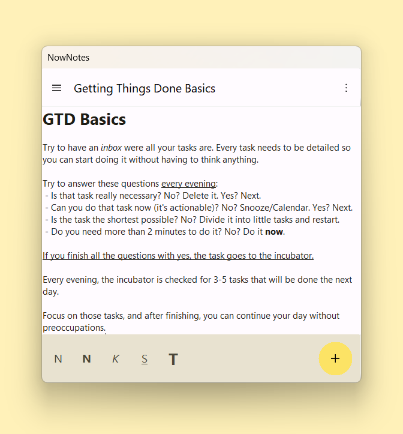

NowNotes

Your desktop. Panic-less.
Your desktop will never be a disaster again. The notes are saved automatically right on NowNotes, and aren't on any common folder, so don't mind. Talking about desktop: when NowNotes is open, it's all time on the top of it, so you don't have to reopen and reopen the app every time it dissapears.Beta 7 · Release Notes · GitHub